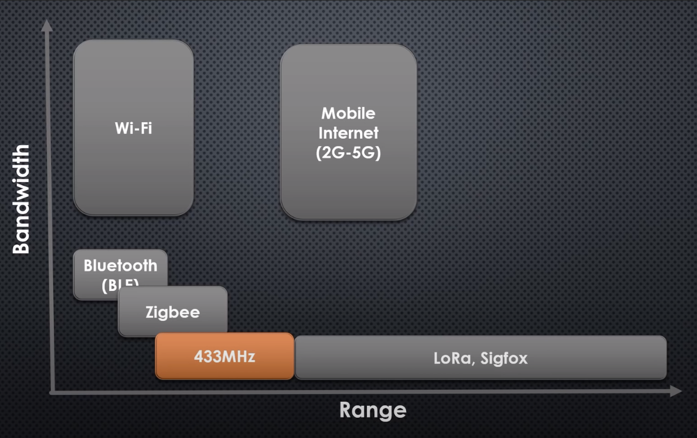

Networks and Communication
- HTTP + Websocket (no tiene TCP, seguridad, ...) Segun pedro muy malo para IoT, solo existe pq hay desarrolladores web
- MQTT (tiene TCP) Segun pedro mucho mejor para IoT
OSI layers
- Application layer: (OSI 5-7)
- HTTP
- HTTPS
- MQTT (Message Queue Telemetry Transport)
- CoAP
- email (pop3)
- Transport layer (OSI 4)
- TCP
- UDP
- Network layer (OSI 3)
- IP
- Link layer (OSI 2) and Physical layer (OSI 1)
- Wire
- Ethernet (IEEE 802.3)
- Token bus (IEEE 802.4)
- Token ring (IEEE 802.5) (topología en anillo)
- USB
- Wireless
- Wi-Fi (IEEE 802.11x)
- Bluetooth (IEEE 802.15.1)
- Bluetooth LE
- GSM/GPRS/HSPA/LTE
- LoRa
- SigFox
- ZigBee (IEEE 802.15.4) (Para hacer red malla)
- NFC (Near Field Communication)
- Radio Frequency (RF de 433MHz) (RFID)
- Infrared (IR)

Radio spectrum
- Altos en MHz -> Mas datos pero a poca distancia y sin obtaculos
- Bajos en MHz -> Menos datos pero gran distancia y gran poder de penetracíon en paredes.
| Band name | Frequency | Wavelength | Example Uses |
|---|---|---|---|
| Extremely low frequency (ELF) | 3–30 Hz | 100.000–10.000 km | submarines |
| Super low frequency (SLF) | 30–300 Hz | 10,000–1,000 km | submarines |
| Ultra low frequency (ULF) | 300–3000 Hz | 1,000–100 km | submarines, mines and caves |
| Very low frequency (VLF) | 3–30 kHz | 100–10 km | Navigation |
| Low frequency (LF) | 30–300 kHz | 10–1 km | Navigation, AM longwave |
| Medium frequency (MF) | 300–3,000 kHz | 1,000–100 m | AM (medium-wave) |
| High frequency (HF) | 3–30 MHz | 100–10 m | |
| Very high frequency (VHF) | 30–300 MHz | 10–1 m | FM, television |
| Ultra high frequency (UHF) | 300–3,000 MHz | 1–0.1 m | Mobile phones, Wifi 2.4G, Bluetooth, ZigBee, GPS |
| Super high frequency (SHF) | 3–30 GHz | 10–1 cm | Wifi 5G |
| Extremely high frequency (EHF) | 30–300 GHz | 10–1 mm | |
| Tremendously high frequency (THF) | 300–3,000 GHz | 1–0.1 mm |
Frecuancy Bands in Spain at 2020
| Techonology | Band | Frecuancies (MHz) | Cost | |------------------|--------:|---------| | Radio Frequency | 315 | | Private | | Radio Frequency | EU433 | 433.05-434.79 | Free | | Televisión (TDT) | 694-790 | Private | | LORA | 800 | Free | | Movil 4Genration | 820 | Private | | SigFox (Europe) | 868 | Private | | ZigBee (Europe) | 868 | Private | | Movistar | 900 | Private | | Orange | 1100 | Private | | Wifi 2.4G | 2400 | Free | | Wifi 5G | 5000 | Free |
- Movil 1G: Para hablar solamente por voz.
- Movil 2G: Conexión de voz y datos por GPRS (SMS).
- Movil 3G: Esta tecnología ofrece voz y datos de alta velocidad. Videollamadas y transferecia de datos.
- Movil 4G: Ofrece datos de alta velocidad pero no voz. Ha sido desarrollada debido al auge de los smartphones.
- Movil 5G: Se prevé que el 2020 empiece a instalarse, aunque se desconoce su fecha de finalización.
- https://xacom.com/frecuencias-operadoras-espana-2g-3g-4g-5g/
La televisión analógica ha utilizado para su emisión desde principios del segundo cuarto del pasado siglo XX, parte de la banda de frecuencias de VHF (47 a 230 MHz) y parte de la banda de UHF (470 a 862 MHz
la banda ISM para usos industriales, científicos y médicos; en concreto, 868 MHz en Europa, 915 en Estados Unidos y 2,4 GHz en todo el mundo.
Redes de baja pontecia
- 64 bytes de mensaje. (No cabe un protocolo como TCP.
- Son redes para mandar datos pequeños
- Es una radio muy básica. (no tiene comfirmacíon de vuelta de que al receptor le ha llegado el mensaje)
- Trabajan en 800MHz. (es como una wifi muy grande).
- Con una antena de 5.600€ cubres 24km de radio. (largo alcance)
- Este espectro es libre (fuera del espectro movil y tv) (no hay que pagar al gobierno para usarlo)
- 1.5 woltios de pila tienes 4 años de uso ininterrumpido.
- Ejemplos
- LORA
- LoWPAN
- sigfow (para mandar alarmas de suguridad)
Sin clasificar en el modelo OSI
- Modbus
- SOAP
- sockets
- web socket
- web services
- Ultrawidband (UWB)
- Serial port
- UART
- HDBaseT: protocolo para dejar el ordenador lejos (hasta 100 metros de distancia) y conetar todo (video, USB) por un cable Ethernet (categoría 5E para distancias cortas o categoria 6 o 7 para distancias largas).
Links
- https://aprendiendoarduino.wordpress.com/category/conectividad-iot/
- https://es.slideshare.net/AnshuPandey5/iot-communication-protocols-socket-programming-with-python-mqtt-http
- https://realpython.com/python-sockets/
- https://aprendiendoarduino.wordpress.com/2018/11/19/mqtt/
- CURSOS
- https://www.coursera.org/learn/computer-networking
- https://www.coursera.org/specializations/networking-google-cloud-platform
- https://www.coursera.org/learn/fundamentals-network-communications#syllabus
- https://www.udacity.com/course/computer-networking--ud436
- https://www.coursera.org/learn/iot-wireless-cloud-computing?specialization=emerging-technologies
- https://www.udacity.com/course/high-performance-computing--ud281
- https://www.youtube.com/watch?v=FGdiSJakIS4
- https://www.coursera.org/learn/ar-technologies-video-streaming?specialization=emerging-technologies
- https://learn.saylor.org/course/index.php?categoryid=9